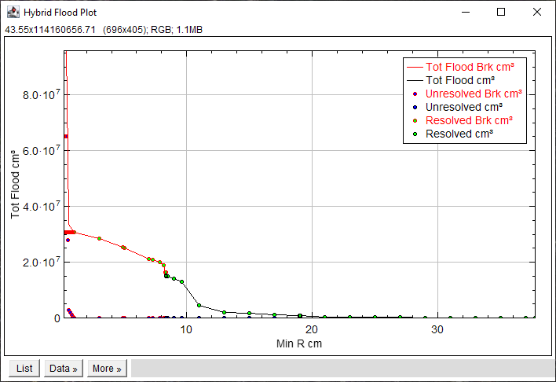

Both plugins perform a 3D simulation of the non-wetting imbibition process in a hybrid porosity image by calling HybridFlood from the front slice to the back slice over a range of pore radii.
Hybrid Flood Search - Performs a bisection search to identify the maximum flood radius that contacts the back slice, sometimes called the "breakthrough" radius or "critical length".
Hybrid Flood Scan - Floods a range of radii with fixed decreasing radius that more accurately mimics an MICP experiment.
Both plugins update the same table and plot so that regions of interest in the Radius vs volume plot can be examined at higher radius resolution.
Plot data are marked with black below breakthrough and with red above breakthrough.
Hybrid Flood Search
The Hybrid Flood Search Dialog.
A summary of the range of lengths in the resolved and unresolved pore spaces is at the top of the Dialog.
Connectivity - select a connection strategy
Stop at Search delta - the accuracy of the breakthrough radius.
Save Images - Save the flood images at each search radius.
Show Breakthrough Image - Display the image at the maximum flood radius that contacts the back slice
Show Plot - Plots the results data.
Like HybridFlood, HybridFloodSearch operates only on 32-Bit stacks and supports anisotropic voxel dimensions. The search first tests if breakthrough occurs between the pore size limits. If a breakthrough threshold exists then a bisection search is done to identify the critical length.
Select a connectivity from the menu and enter a length change limit for the search. Check the options as needed. "Show Breakthrough Image" and "Show Plot" are recommended. Click "OK" to start the search.
Sorted bisection search Results.
The search continues until the largest pore radius that produces "Breakthrough" is obtained. If "Show Breakthrough Image" is checked the flood image at breakthrough is opened in a new window.
Volume vs Radius Plot. Breakthrough is marked with red.
Volume rendering of breakthrough image
Hybrid Flood Scan
The Hybrid Flood Scan Dialog.
A summary of the range of lengths in the resolved and unresolved pore spaces is at the top of the Dialog.
Connectivity - select a connection strategy
Flood Minimum pixel value - the lower radius limit to flood.
Flood Maximum pixel value - the upper radius limit to flood..
Flood Increment - The step size between min and max
Save Images - save the flood image at each flood step, useful for producing flood animations.
Show Plot - Plots the results data.
Click OK to add the flood data to the results table and plot

Volume vs Radius Plot with added scan data. Above breakthrough is marked with red.